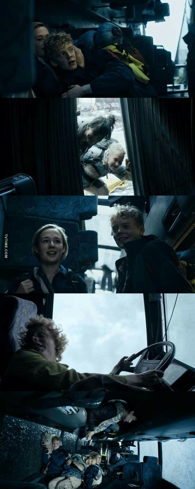
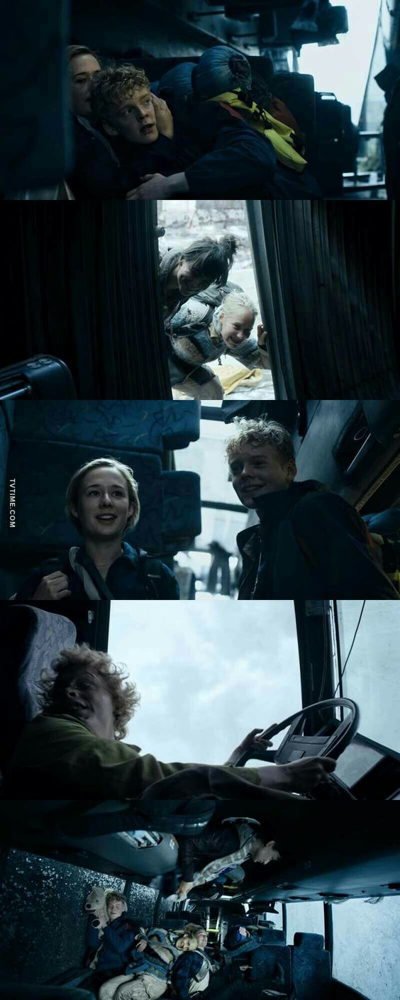

PARABÉNS!! Você ganhou!
Sua atuação funciona! Sten se afasta com medo e vai embora, levando consigo todos os carros, drones e helicópteros da Apollon. Você finge por mais alguns minutos. Simone corre em sua direção com lágrimas nos olhos. “Deu certo!” Você olha para ela com um sorriso no rosto, mas ela ainda parece preocupada e um pouco ofendida. Os outros integrantes ficam aliviados por você estar bem.
Você percebe que, por mais que existam momentos de tensão e conflito, o grupo se apoia durante as horas mais difíceis. Principalmente a Simone. Você se sentia tão ressentido por não ter tido uma adolescência normal que esqueceu que não foi só você que passou por dificuldades. A Simone também abriu mão de muita coisa para cuidar de você.
Agora, vocês têm um novo plano: ir atrás do seu pai. Juntos, vocês descobrem sua localização. Ao encontrá-lo, muitas verdades são reveladas.
O tempo passa e, finalmente, vocês encontram a cura. No final, vocês realmente foram a "salvação da Dinamarca".
 
